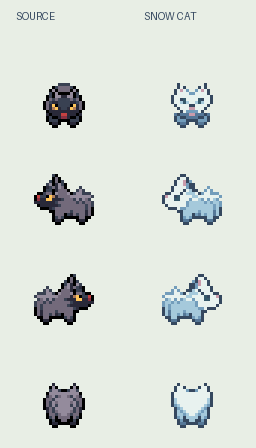
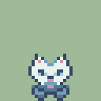
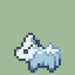
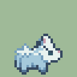
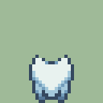

필드와 메뉴
필드화면 클릭 후 ↑↓ 선택 · Enter 확인 · Esc 뒤로. 화면을 바꿔도 음악은 이어집니다.
눈송냥 · 필드 보행
32 × 32 px / 4방향
왼쪽: 원작 판형 · 오른쪽: 수정안
작은 화면에서도 같은 동료로.
원작 포챠나의 몸과 보행을 판형으로 사용했습니다. 눈송냥에 맞춰 귀·얼굴·눈·털을 수정한 파생 그림입니다.




큰 그림 축소 없음 · 판형 발 픽셀 보존 · 원작: Nintendo / Game Freak / Creatures
따로 보고, 따로 결정.
그림·메뉴·음악을 각각 Allow / Deny 할 수 있습니다. 수정하면 새 버전으로 다시 검토합니다.